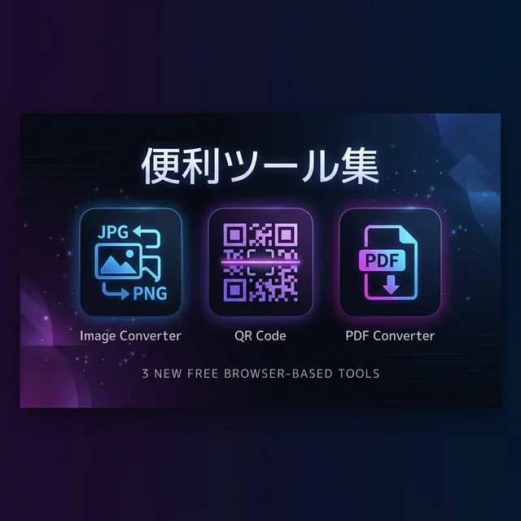

🛠️ 無料で使える！画像変換・QRコード・PDF結合 — ブラウザ完結の便利ツール3種リリース

ブラウザ完結で使える、新しい無料ユーティリティツールを3つリリースしました。
今回開発したのは「画像変換・圧縮」「QRコード生成・読み取り」「PDF結合・分割」の3ツール。すべてブラウザ内で処理が完結し、ファイルがサーバーに送信されることは一切ありません。
🖼️ 画像変換・圧縮ツール
PNG・JPEG・WebP・AVIF・ICO・Base64の6フォーマットに対応した画像変換ツールです。
- フォーマット変換: PNG → WebP、JPEG → AVIF など、あらゆる組み合わせに対応
- リサイズ: 任意の幅・高さを指定して一括リサイズ
- 圧縮: 品質スライダーでファイルサイズを調整
- favicon作成: ICOフォーマットへの変換に対応
- 一括処理: 最大50枚まで同時に変換可能
ドラッグ＆ドロップで画像を追加し、変換設定を選んでボタンを押すだけ。結果はZIPで一括ダウンロードもできます。
📱 QRコード生成・読み取りツール
URL やテキストからQRコードを即座に生成できるツールです。
- リアルタイムプレビュー: テキストを入力すると即座にQRコードが表示
- カスタマイズ: サイズ（256/512/1024px）、前景色・背景色を自由に変更
- エラー訂正レベル: L/M/Q/Hの4段階から選択
- ダウンロード: PNG・SVGの2形式に対応
- 読み取り機能: QRコード画像をドロップすれば内容をデコード
スマホでは「QRコードの読み取り」は標準搭載ですが、「QRコードの生成」はアプリが必要。このツールなら、ブラウザだけで色やサイズをカスタマイズしたQRコードが作れます。
📄 PDF結合・分割ツール
複数のPDFファイルを1つにまとめたり、特定のページだけを抽出できるツールです。
- 結合: 複数PDF（最大20ファイル）をドラッグ＆ドロップで追加、順番もドラッグで変更可能
- ページ指定抽出: 「1,3,5-8,12」のようにページ番号を指定して抽出
- 1ページ分割: 全ページを個別のPDFファイルに分割
- 範囲分割: 指定ページ数ごとにまとめて分割
会議資料の結合、必要なページだけの抽出など、日常的なPDF作業がブラウザだけで完結します。
🔒 プライバシーと制限について
3つのツールすべてに共通するポイント：
- 完全ブラウザ処理: ファイルはサーバーに送信されません。処理はすべてあなたのブラウザ内で完結
- 無料・無制限: アカウント登録も不要。何回でも使えます
- UX保護制限: ブラウザのメモリ保護のため、1ファイル50MBの上限があります（課金のための制限ではありません）
技術的な話
これらのツールは以下のオープンソースライブラリを使用しています：
- 画像変換: ブラウザ標準の Canvas API
- QR生成: qrcode-generator（MIT、~8KB）
- QR読み取り: jsQR（Apache-2.0、~55KB）
- PDF処理: pdf-lib（MIT、~330KB）
すべてCDN経由で読み込み、サーバーサイドの処理は一切なし。つまり運用コストは$0です。
まとめ
「ちょっとした画像変換」「QRコードを1つ作りたい」「PDFのページを抜き出したい」——そんな日常のちょっとした作業のために、わざわざアプリをインストールしたくない。
Gravity Portalの便利ツール集は、そんなニーズに応えるブラウザ完結ツールです。ぜひ使ってみてください。